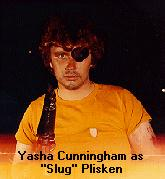

Escape From Seattle | Kill Roy | Doctor Who | Star Trek: The Pepsi Generation
What's Ryan Watching | The Wolfe Project | Mystery Science Theater 3000
Have I Got News For You

Escape From Seattle was my first movie to be shot in 16mm, hence I consider it my first "real" movie. Intended as a 1 minute trailer, my friend Yasha Cunningham and I were inspired by the John Carpenter movie, Escape From New York, which not coincidentally had opened the week before.At the time Westlake Center in downtown Seattle was under construction, making it appear like the wasteland of Manhatten depicted in the movie. We mobilized all our friends, and a week later we were shooting. Yasha assumed the part of "Slug" Plisken (so named due to the number of gastropods found in Seattle's damp climate), with local filmmakers Karl Krogstad as the President of the United States, and Janice Findley as "Adrian Barbeau's corpse."
Filming was completed in one evening at Westlake, along 4th Avenue, and the Ferry Terminal. Unfortunately, when the film came back from the lab the following week it was discovered that Janice's borrowed camera had been improperly loaded, resulting in a jerky, unstable image.
Undaunted, I went ahead with post production, stealing music from Tangerine Dream's soundtrack to Sorcerer. Whatever slick polish the film may have been lacking, it taught me how to perservere in a crisis and the actual mechanics for taking a film through post production.
After directing The Count for Henry Gonzalez, I was ready to embark on my masterpiece, Kill Roy.
Escape From Seattle
1 minute. 16mm. Filmed June 1980, released June 1981.
Cast. . . Yasha Cunningham as Slug Plisken, Karl Krogstad
as The President, Janice Findley as Adrian Barbeau's Corpse.
Written, Produced, and Directed by Ryan K. Johnson
 Back to Ryan's Homepage
Back to Ryan's Homepage
Escape From Seattle | Kill Roy | Doctor Who | Star
Trek: The Pepsi Generation
What's Ryan Watching | The Wolfe Project | Mystery
Science Theater 3000
Have I Got News For You